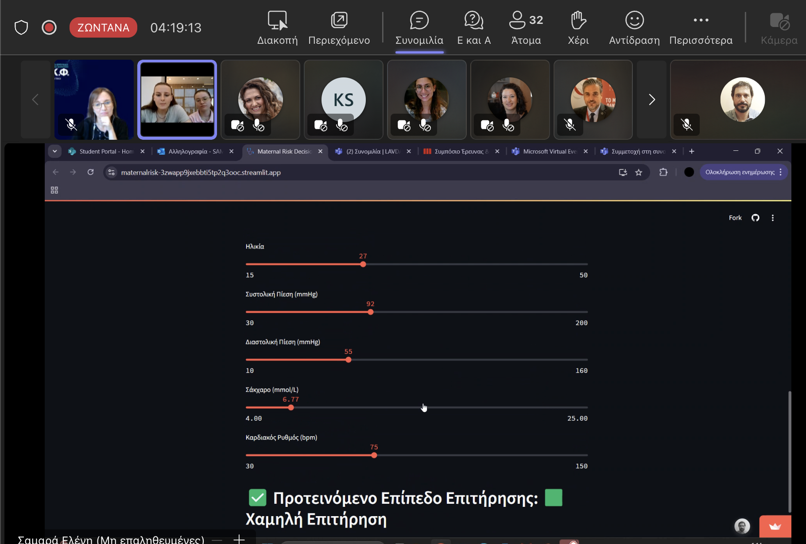
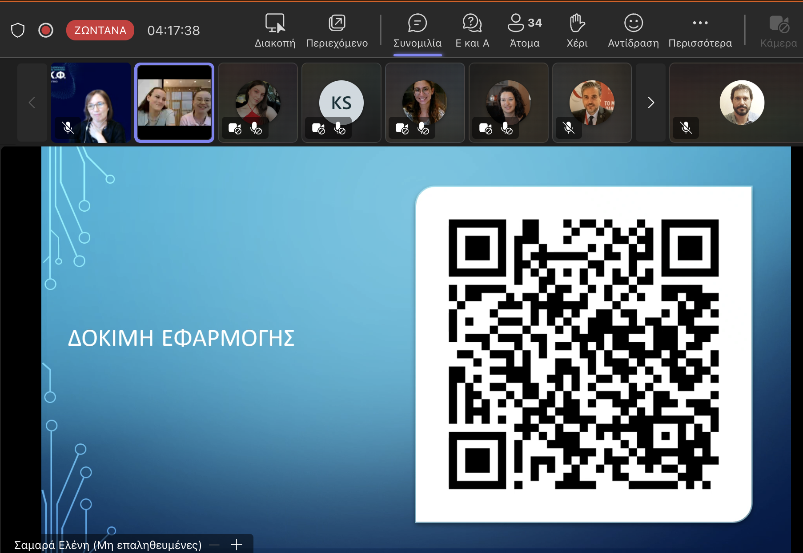
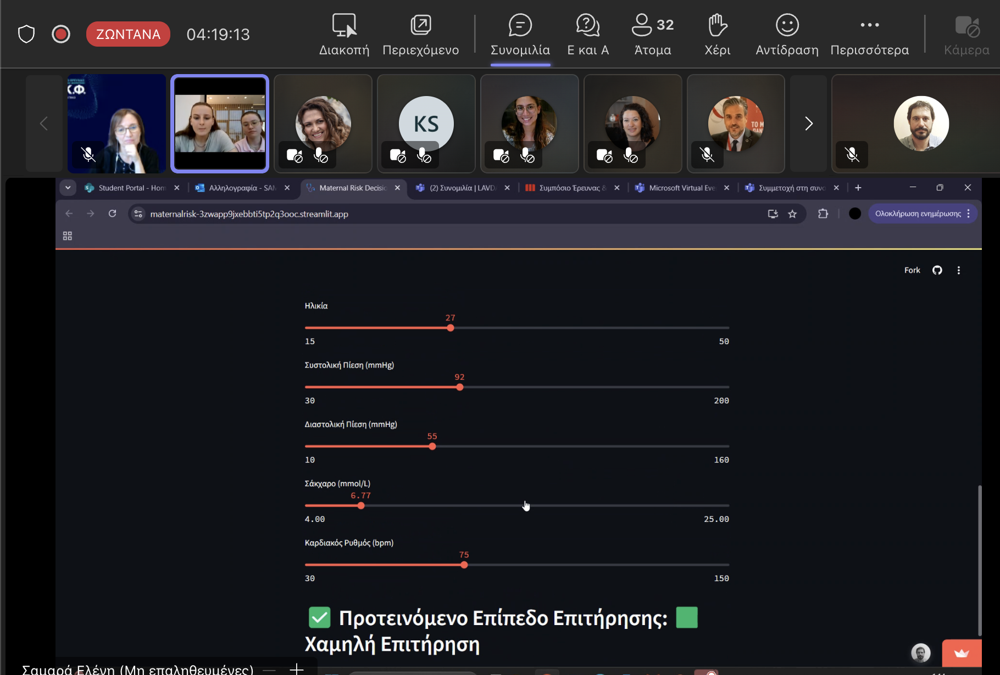
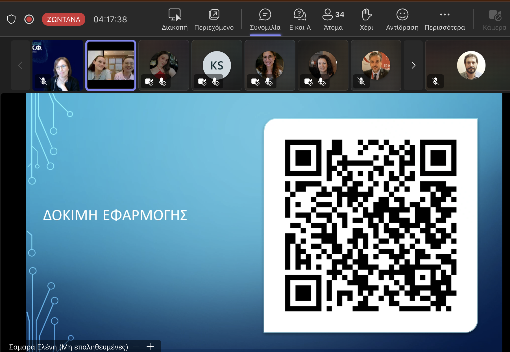

Georgios Bouchouras, PhD
Senior Lecturer in Biomechanics
Metropolitan College, in collaboration with University of East London
Biomechanics | Gait Analysis | Ontology Engineer | Prompt Engineer | AI | Machine Learning
🌐 Maternal Risk Decision Support: A Student-Led Innovation
Posted on May 8, 2025
 



We are proud to announce that our first-year midwifery students, Angela Lavntarakou and Eleni Samara, presented their research at the 10th Student Symposium on Research and Innovation hosted by Metropolitan College. Under my academic supervision, our team developed a web-based Maternal Risk Decision Support System, now publicly available:
🧠 About the Project Title: Analysis of Clinical Risk Thresholds During Pregnancy and Development of a Web-Based Decision Support Application The application is based on statistical analysis of real-world data from the Maternal Health Risk Dataset (Ahmed et al., 2020, Springer). Importantly, it does not rely on predefined clinical rules but rather on statistical exploration of all possible combinations among clinical variables, such as: • Systolic Blood Pressure • Diastolic Blood Pressure • Blood Sugar (BS) • Heart Rate • Age Through this multidimensional analysis, the system classifies maternal risk into: • 🟥 High Surveillance • 🟧 Medium Surveillance • 🟩 Low Surveillance
👉 Try the Application
⚠️ Disclaimer This tool is strictly for educational and research use. It is not a diagnostic tool and must never replace professional medical advice or decision-making. Always consult a qualified healthcare provider for medical concerns. ⸻ 💡 Why It Matters This interactive system: • Supports risk screening in a clear and interpretable manner, • Can be used in midwifery education and primary care environments, • Offers an accessible alternative to black-box AI models, • Can be expanded to integrate real-time data and IoT platforms. ⸻ We invite educators, researchers, and healthcare professionals to explore the application and reflect on the role of interpretable, data-driven tools in maternal health.